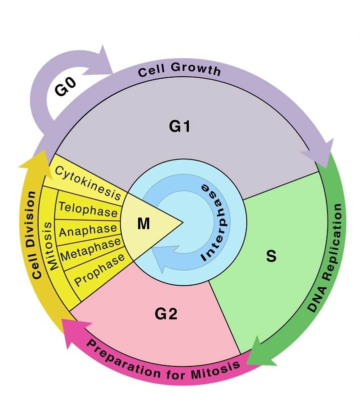
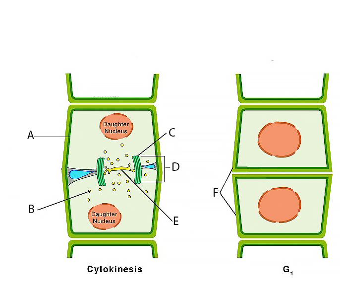
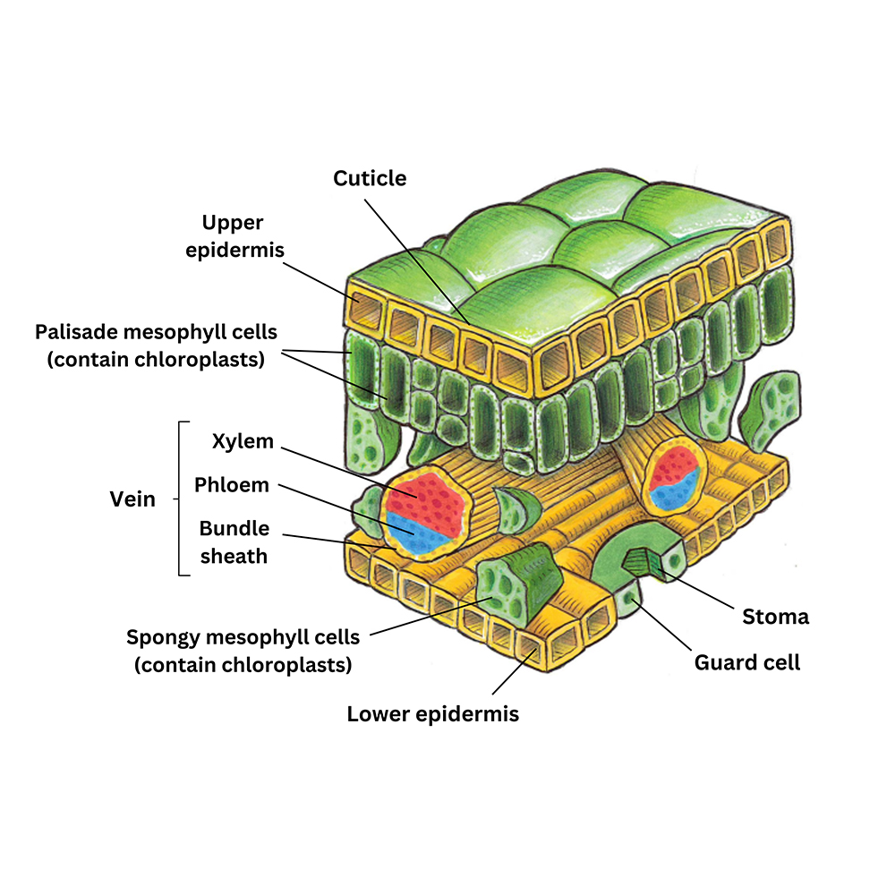

THE CELL CYCLE (Overview)

G₀Quiescent / non-dividing state
G₁Cell growth and normal functions
SDNA replication
G₂Preparation for mitosis
MMitosis and cytokinesis
Observe → Identify → Quantify → Calculate → Interpret
Watch this animation before identifying and counting the mitotic stages below.

Look at the onion root-tip cell field. Identify each numbered cell, then give one piece of evidence for your choice.
| Cell # | Stage (choose) | Evidence (what did you observe?) |
|---|
Examine this field of 40 cells. Count how many cells are in each stage, using the cell center to decide whether an edge cell is included, then enter your totals.
| Stage | Number of cells | Percentage of total (%) |
|---|---|---|
| TOTAL | 0 | 0 |
Use the A–F labels in this diagram to identify the structures that build the cell plate during plant cytokinesis.


The onion root-tip cells in this lab divide rapidly in the apical meristem. After mitosis, daughter cells grow and differentiate into specialized plant tissues.
In a mature leaf, these include dermal tissue (including stomata for gas exchange), ground tissue, and vascular tissue, which transports water, minerals, and sugars.
Two root tips are observed under different conditions.
| Root Tip | % Cells in Mitosis (MI) | Condition |
|---|---|---|
| A | 18% | Well-watered plant |
| B | 3% | Drought-stressed plant |